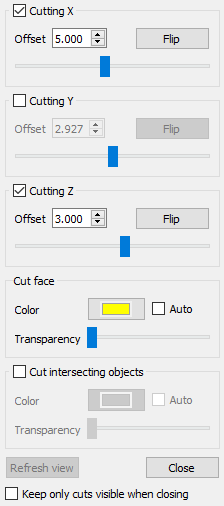
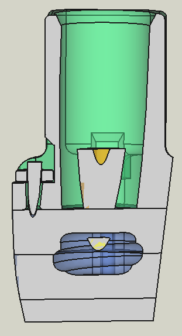
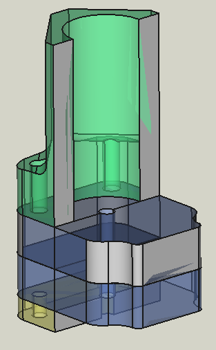

Part SectionCut/es
|
|
| Menu location |
|---|
| 1.0 and below: View → Persistent section cut 1.1 and above: Part → Persistent Section Cut |
| Workbenches |
| 1.0 and below: All 1.1 and above: Part |
| Default shortcut |
| None |
| Introduced in version |
| 0.20 |
| See also |
| Std ToggleClipPlane |
Descripción
El comando  Part SectionCut solo funciona con objetos en Part y PartDesign así como con los ensamblajes formados por ellos. Crea un corte permanente de los objetos y ensamblajes. Dado que el resultado del corte es un objeto
Part SectionCut solo funciona con objetos en Part y PartDesign así como con los ensamblajes formados por ellos. Crea un corte permanente de los objetos y ensamblajes. Dado que el resultado del corte es un objeto  Part Cut normal, se puede modificar posteriormente o, por ejemplo, imprimirlo en 3D. A continuación se indican algunas aplicaciones posibles.
Part Cut normal, se puede modificar posteriormente o, por ejemplo, imprimirlo en 3D. A continuación se indican algunas aplicaciones posibles.
{kind=link}
Un ensamblaje en sección. Algunas caras de la sección se han coloreado manualmente. La parte amarilla no está seccionada porque se ha desplazado deliberadamente una micra hacia otra pieza.
Uso
{kind=link}

The Persistent Section Cut dialog is opened via the menu Part →  Persistent Section Cut. Once enabled, it is independent of the current workbench and the currently opened document. It can be detached from its opening position by pressing the button at the upper right of the dialog.
Persistent Section Cut. Once enabled, it is independent of the current workbench and the currently opened document. It can be detached from its opening position by pressing the button at the upper right of the dialog.
The command takes all currently visible Part objects in the active document into account. Therefore you can control what will be cut, by making a part visible or not. By checking one of the Cutting options in the dialog the command is activated. You can then either enter a position (in coordinates of the document) or use the sliders to set the cut position. It is also possible to combine cuts, for example to cut in X and Z-direction. The buttons Flip flip the side that is cut.
As soon as a Cutting option is checked in the dialog, you get a cut object in the Tree View. Its name is e.g. SectionCutY when it is a cut in Y-direction.
The dialog option Keep only cuts visible when closing hides everything in the Tree View except of the cut object when the button Close is clicked to close the dialog.
To remove the cut object, uncheck all Cutting options.
By unchecking all Cutting options, the button Refresh view becomes active. When pressed, it takes a kind of a screenshot of the currently visible Part objects. This will be used when you check the next time a Cutting option. The refreshing is necessary when you switched the document. It is furthermore useful for assemblies, where you might want to hide some parts or later want to add them to the cut. In this case the refreshing recalculates the min/max values of the sliders and cut positions according to the currently visible object dimensions.
If the option Auto in the cut face section is checked, the color and transparency of the cut objects will be taken for the cut face. This only works if all cut objects have the same color or transparency.
The option Cut intersecting objects allows to cut also objects that intersects each other. I assemblies intersections happen sometimes for object that are designed to only touch each other due to numerical precision issues. The drawback of the option is that all visible objects will get the same color. This color can be specified like in the cut face section of the dialog.
If you need the cut for e.g. a nice picture with several face colors, you can change the face colors using the tool  Color per face.
Color per face.
Note: For assemblies the sliders in the dialog are disabled (except the one for the transparency). The reason is that a slider movement results in many cut operations is a short time. For assemblies this quickly consumes all CPU power and a sticky slider movement is not helpful.
When you select a cut object in the Tree View and then open the Section Cut dialog, the cut positions will be read into the dialog.
Applications
- An important use case is that Section Cut creates filled cuts, not hollow ones like the
 Clip Plane feature.
Clip Plane feature. - Section Cut is useful for assemblies to visualize for example the working principle of a device. You thereby might want to color certain cut faces using the
 Color per face tool. To use the tool, switch to the Part or PartDesign workbench, right-click on the cut object in the Tree View and select in the context menu Set colors.
Color per face tool. To use the tool, switch to the Part or PartDesign workbench, right-click on the cut object in the Tree View and select in the context menu Set colors. - Without the option Cut intersecting objects only parts that don't intersect others will be cut. This can be used as a collision test.
- The Section Cut command can be used for technical drawings to highlight certain areas or to be able to draw in dimensions. The image below shows an example where the TechDraw features ActiveView and
 View are used.
View are used.
{kind=link}
{kind=link}
A technical drawing where a Section Cut result is used. (Click on the image for full size.)
Special cut positions
{kind=link}

- For example in the first image in this page only one quarter of the assembly is cut. This was done by creating a cut in X-direction. Then in the resulting cut object SectionCutX the placement of the subobject SectionCutBoxX was changed.
- To get a cut in any direction, you can do this:
- Create a new Std Part container.
- Select all objects you want to cut in the Tree View and move them into the container.
- Now set the placement of the container to a rotation of your choice. For the image at the left, the container was rotated by 45° around the X and Z-axis and the section cut was performed in X-direction.
Limitations
{kind=link}

- 1.0 and above: The option Cut intersecting objects will color all visible parts the same. This can technically not be avoided. However, if one needs the persistent cut for e.g. a presentation, see the method described above how to reset the color manually.
- There can be color artifacts in the cut result. If and how depends on the OpenCASCADE library and also on the view position. In many cases the color artifacts disappear when the 3D View is slightly rotated.
- When having cut objects with different colors, it is not possible to apply automatically their color to the corresponding cut faces. All cut faces will get the same color selected in the dialog.
- When using the A2plus workbench, it is not possible to apply automatically the color of the assembled parts to the corresponding cut faces. All cut faces will get the same color selected in the dialog. The reason is that A2plus does not input the parts as link but loads them as file.
Background Info
Section Cut is inspired by the macro Cross Section and works technically this way:
All visible objects are put into a  Part Compound container. For the option Cut intersecting objects a
Part Compound container. For the option Cut intersecting objects a  Boolean Fragments container is used instead. The compound is cut using a
Boolean Fragments container is used instead. The compound is cut using a  Part Box object. The box must be as large as necessary to cover the whole volume of all visible objects. To achieve this, the bounding box of the objects is acquired. When changing the view by adding/removing objects or changing the document, the bounding box must be updated. This is done when the button Refresh view is clicked.
Part Box object. The box must be as large as necessary to cover the whole volume of all visible objects. To achieve this, the bounding box of the objects is acquired. When changing the view by adding/removing objects or changing the document, the bounding box must be updated. This is done when the button Refresh view is clicked.
- Creation and modification: New Sketch, Extrude, Revolve, Mirror, Scale, Fillet, Chamfer, Face From Wires, Ruled Surface, Loft, Sweep, Section, Cross-Sections, 3D Offset, 2D Offset, Thickness, Project on Surface, Appearance per Face
- Boolean: Compound, Explode Compound, Compound Filter, Boolean Operation, Cut, Union, Intersection, Connect Shapes, Embed Shapes, Cutout Shape, Boolean Fragments, Slice Apart, Slice to Compound, Boolean XOR, Check Geometry, Defeaturing
- Other tools: Box Selection, Shape From Mesh, Points From Shape, Convert to Solid, Reverse Shapes, Simple Copy, Transformed Copy, Shape Element Copy, Refine Shape, Set Tolerance, Persistent Section Cut, Attachment
- Preferences: Preferences, Fine tuning
- Getting started
- Installation: Download, Windows, Linux, Mac, Additional components, Docker, AppImage, Ubuntu Snap
- Basics: About FreeCAD, Interface, Mouse navigation, Selection methods, Object name, Preferences, Workbenches, Document structure, Properties, Help FreeCAD, Donate
- Help: Tutorials, Video tutorials
- Workbenches: Std Base, Assembly, BIM, CAM, Draft, FEM, Inspection, Material, Mesh, OpenSCAD, Part, PartDesign, Points, Reverse Engineering, Robot, Sketcher, Spreadsheet, Surface, TechDraw, Test Framework
- Hubs: User hub, Power users hub, Developer hub